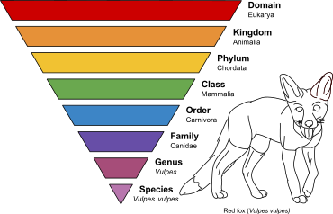
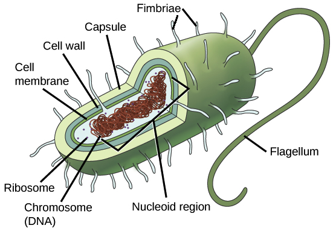
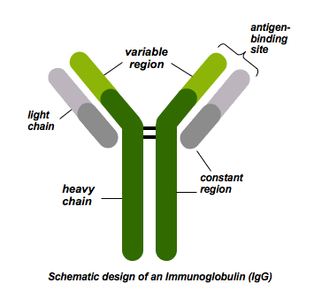

| Vocab Words |
Etymology |
Definition |
Synonym |
Image |
| Genus |
Latin: Plural genera in the 1550s. |
A classification of life. Can describe organsisms as well as viruses. It is one type of class that can be divided into many different species. An example of this is the mammal genus. Divided into different type of animals such as lions and giraffes. |
Categories |
Taxonomic rank with genus category made by Wikipedia at this page. CC-0(Free use). |
| Prokaryote |
Greek: Word in 1963. |
A prokaryote is what describes a microscopic cell, or single-cellec organism, that doesn't not have a nuceleus. This is not to be confused with a eukaryotic cell as that has a nuceleus. Additional, a prokaryote does not have specialized organelles. The prokaryote includes the bacteria along with any cyanobacteria. |
Non-nucleus organism. |
Prokaryote cell made by Khan Academy at this page. CC-0(Free use). |
| Antibody |
German: word in 1891 with anti+body as phrase. |
A blood protein created by white blood cells to counter specific antigens(viruses of diseases) in the body. These antibodies are created mostly by B and T cells (white blood cells) to alert the body and trigger the immune system. These antibodies will defend and protect the foreign substances and alert organs of it as well. |
Immune response. |
Antibody structure made by Jena Bioscience at this page. CC-BY-NA. |
| Microbe |
Greek and French: Word to describe bacterium. |
A microbe is a microorganism that can be classified into many different genus such as a bacteria or a virus. These genus usually create diseases in another organism. |
Bacterium |
 Microbe picture made by Blender at this page. CC-0(free use). Microbe picture made by Blender at this page. CC-0(free use). |
| Togavirus |
Latin: Word in 1970 with toga+virus as phrase. |
Of a family that is made of single-stranded RNA viruses. These single-stranded RNA are made within a sphereical virion. The three examples that is classified as a togavirus are measles, mumps, and rubella. |
Virus |
 Different virus pictures made by Vincent Racaniello at this page. CC-BY. Different virus pictures made by Vincent Racaniello at this page. CC-BY. |